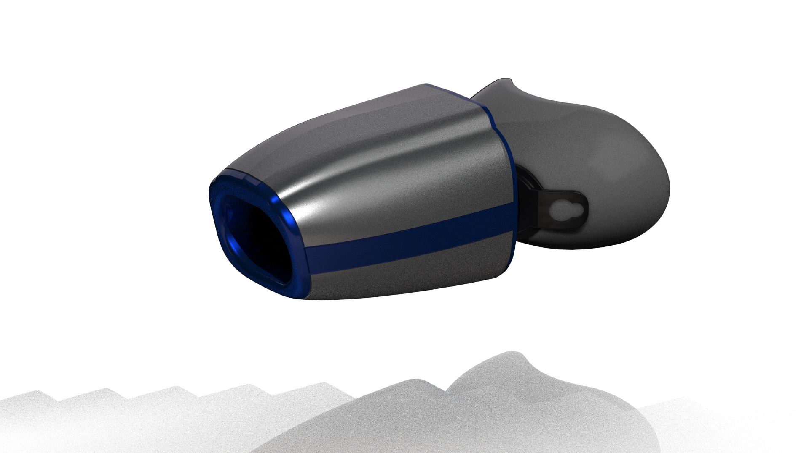

Real-time guidance
for every run & ride.
Clip on, breathe like you always do, and go. AeroCardia reads your oxygen uptake, ventilation and effort live — the lab test for endurance and longevity, in every session.
From your last session


Personalised run & ride training. Powered by the best data.
Heart rate tells you how hard your heart is working. AeroCardia tells you what your whole system is doing — how much oxygen you are actually using, and how close you are to your ceiling.
Real-time guidance
Live VO2, ventilation and RER stream to your watch or head unit — see exactly what your engine is doing, breath by breath, on every hill and interval.
- check_circle Live oxygen & breathing feedback
- check_circle Measured, not estimated
- check_circle Works on the road, trail and bike
Train in phases
Build an aerobic base, test where you are, then sharpen for race day. Each session becomes feedback: was that aerobic, or did you drift?
- check_circle Foundation, test and peak blocks
- check_circle Session review after every workout
- check_circle VO2 max tracked as a long-term trend
A real effort signal
RER shifts in real time as effort climbs — an honest, breath-by-breath read on how hard you're working, from warm-up through the finish.
- check_circle Live RER, streamed in real time
- check_circle Track how it shifts across a session
- check_circle Useful from a 10k to a gran fondo
Clip it on in seconds and go.
A soft cup seals over your nose and mouth, a light strap holds it, and the sensor pod does the rest. No mouthpiece to bite, no calibration ritual, no cart of gas analysers.
Instant Universal Sync
Pairs directly with our app via Bluetooth.
Sweat & Weatherproof
Engineered with IP67 hydrophobic diaphragms built specifically for torrential rain and humidity.
Train in phases. Peak when it matters.
Raising VO2 max is not about going hard every day. It is about building an aerobic base, testing where you are, then sharpening for the event that counts.
Foundation
Easy-paced volume that grows your aerobic engine. AeroCardia keeps you genuinely easy so you never drift past your metabolic ceiling prematurely.
Test
A structured ramp protocol delivers real-time clinical VO2 max determination and automatically recalculates current threshold boundaries.
Peak
Short intervals targeted directly at VO2 max ceiling, timed to preserve recovery so you sharpen race fitness without digging a metabolic hole.
Sport your team's colours.
Express your country with enthusiasm. Match your sensor to your national colours — for race day, for your club, or just to fly your own flag.
—
—
Lab-grade insight, without the lab.
VO2 max is one of the strongest predictors of how long and how well you live — but getting a real number has always meant an appointment, a mask, and a metabolic cart most people will never have access to. We think that gap shouldn't exist for anyone chasing a PR, or just trying to stay ahead of their own aging curve.
It started when Matthew Behr, a McGill-educated engineer, and Dr. Abhinav Sharma, a practicing cardiologist, kept running into the same wall: measuring heart and lung function outside of a clinic was extremely difficult, and real cardiorespiratory fitness data lived exclusively behind clinical equipment and a technician's appointment book. AeroCardia is what happens when two people decide that gap doesn't need to exist.

Innovation
We build with the latest sensing and signal-processing technology, so the device keeps getting smarter with every session it reads.
Scientific Rigor
Every reading is validated against reference-standard exercise physiology testing — so the number on your screen is one you can actually trust.
Empowerment
We design for everyday athletes first, so understanding your engine is never locked behind a lab appointment.
Built by people who use it.

Matthew Behr, P.Eng
Chief Executive Officer
A McGill-educated engineer and ultramarathon runner, Matthew has spent his career bringing ambitious health technology to market — and is building AeroCardia to put the numbers elite athletes chase within reach of everyday runners and riders.

Dr. Abhinav Sharma, MD, PhD
Chief Medical Officer
An award-winning cardiologist and clinician-scientist, Abhinav brings the same scientific rigor used in cardiovascular research to a device built for daily training, not diagnosis.
Alberto Alonso Romero
EngD
Ewan MacKenzie
MScA
Oscar Lanthiez
B.Eng
Sarra Chebaane
MSc
Reading on oxygen, endurance & healthspan.
Founder Showcase: Meet Matthew Behr, CEO of AeroCardia
Ultramarathons, a lost dog named Buoy, and why AeroCardia exists: "why estimate what you can quantify."
Peak Performance and Longevity: The Tour de France Guide to VO2 Max
What three weeks of racing at the limit of human endurance teaches the rest of us about pacing, ceilings and systemic cardiorespiratory recovery.
The Ultimate Guide to VO2 Max: Measurement, Normative Data & Optimization
How VO2 max is measured, what an elite score looks like stratified by age and biological sex, and the precise aerobic volume that genuinely moves it.
What Is VO2 Max, and Why Does It Matter for Healthspan?
The gold-standard measure of cardiorespiratory fitness — and statistically the single most powerful predictor of how long and how well you live.
Be first to train with your own numbers.
AeroCardia is coming to runners, cyclists and longevity athletes. Join the waitlist for early access, launch pricing and updates from the team.